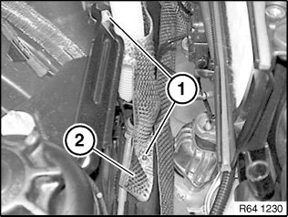
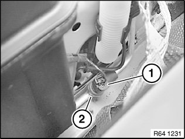

<!DOCTYPE html>
<html>
  <head>
    <title>Refrigerant Pressure Sensor / Switch: Service and Repair — 2011 BMW 128i Coupe (E82) L6-3.0L (N52K) Service Manual | Operation CHARM</title>
    <meta name='description' content="Detailed repair manual for the 2011 BMW 128i Coupe (E82) L6-3.0L (N52K).">
    <link rel='stylesheet' href="../style.css">
    <meta name='viewport' content='width=device-width, initial-scale=1.0' />
  </head>
  <body>
    <div class='theme-colors header'>
      <div class='branding'><b>Operation CHARM</b>: Car repair manuals for everyone.</div>
<div class=breadcrumbs><a class='breadcrumb-part' href="../">Home</a> <b>&gt;&gt;</b> <a class='breadcrumb-part' href="../BMW/">BMW</a> <b>&gt;&gt;</b> <a class='breadcrumb-part' href="../BMW/2011/">2011</a> <b>&gt;&gt;</b> <a class='breadcrumb-part' href="../index.html">128i Coupe (E82) L6-3.0L (N52K)</a> <b>&gt;&gt;</b> <a class='breadcrumb-part' href="0.html">Repair and Diagnosis</a> <b>&gt;&gt;</b> <a class='breadcrumb-part' href="0.html#Heating%20and%20Air%20Conditioning/">Heating and Air Conditioning</a> <b>&gt;&gt;</b> <a class='breadcrumb-part' href="0.html#Heating%20and%20Air%20Conditioning/Sensors%20and%20Switches%20-%20HVAC/">Sensors and Switches - HVAC</a> <b>&gt;&gt;</b> <a class='breadcrumb-part' href="1990.html">Refrigerant Pressure Sensor / Switch</a> <b>&gt;&gt;</b> <a class='breadcrumb-part' href="11387.html">Service and Repair</a></div></div>
<div class="theme-colors floaty-message lemon-message">
  <b style="font-size: 1.5em; color: gold">Manuals through 2025 now available!</b>
  <br><br>
  Our trusted friends have launched a new website named LEMON, which has newer manuals. It also contains all the CHARM manuals.
  <br><br>
  LEMON is the spiritual successor to  CHARM, I recommend you try it!
  <br><br>
  Link: <a style='white-space: nowrap' href="../missing-page">lemon-manuals.la</a> or <a style='white-space: nowrap' href="../missing-page">lemon-manuals.org.ua</a>
  <br><br>
  (Some people have issue connecting. LEMON is investigating. For now, use Firefox or change your DNS server)
  <br><br>
  Or, hide this message: <a href="../missing-page">temporarily</a> or <a href="../missing-page">permanently</a>
</div>
<div class='main'>
<h1>Refrigerant Pressure Sensor / Switch: Service and Repair</h1><br><br><b>64 53 520 Replacing Safety Pressure Switch</b><br><br><br><div class='oxe-image'></div><br><br><br><br><br><b>WARNING:</b><br>Risk of injury.<br>Refrigerant circuit is under high pressure.<br>Follow safety instructions for handling R 134a refrigerant.<br>Avoid contact with refrigerant and refrigerant oil.<br>Follow safety instructions for handling refrigerant oil.<br><br><br><div class='oxe-image'></div><br><br><br><br><br><b>IMPORTANT:</b><br>Risk of damage.<br>Restart engine only when air conditioning system has been correctly filled.<br>Follow instructions for opening and replacing parts in refrigerant circuit. If air conditioning system is opened for more than 24 hours:Replacing drier insert for A/C system<br><br><br><div class='oxe-image'></div><br><br><br><br><br><b>Necessary preliminary tasks:</b><br><span class='indent-2'>&#09;</span>-<span class='indent-5'>&#09;</span>Drawing off, evacuating and filling the A/C system are not included in the time value given for this work operation<br><br><br><div class='oxe-image'></div><br><br><br><br><br>Release screws (1) and bent heat insulation (2) to one side slightly.<br><br><br><div class='oxe-image'></div><br><br><br><br><br>Disconnect plug connection (1) and release safety pressure switch (2).<br>Tightening torque 64 53 14AZ.<br><br><br><div class='oxe-image'></div><br><br><br><br><br><b>After installation:</b><br><span class='indent-2'>&#09;</span>-<span class='indent-5'>&#09;</span>Evacuate and fill air conditioning system<br><br><br><h3>m|:</h3><div class='oxe-image'></div><br><br><br></div>
<div class="theme-colors footer">
  <i>pro multis</i> · <a href="../about.html">About Operation CHARM</a>
</div>
<script src="../script.js"></script>
</body>
</html>
